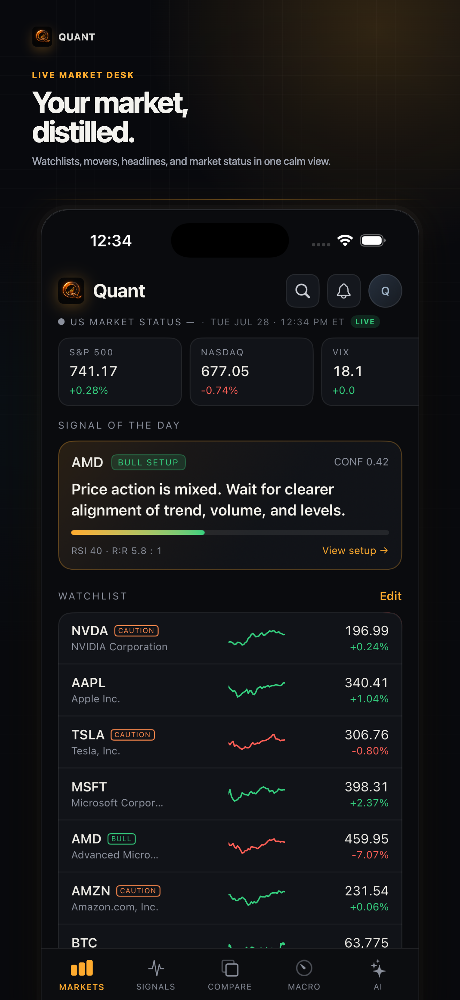
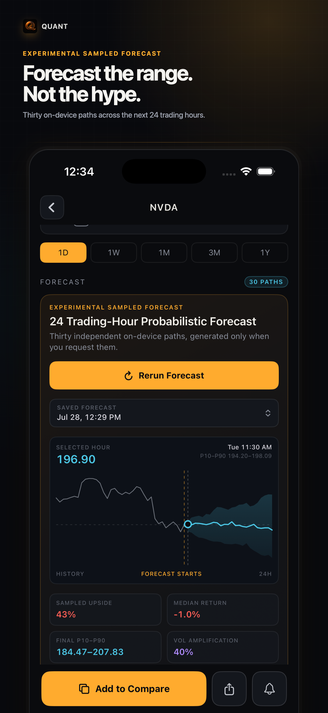
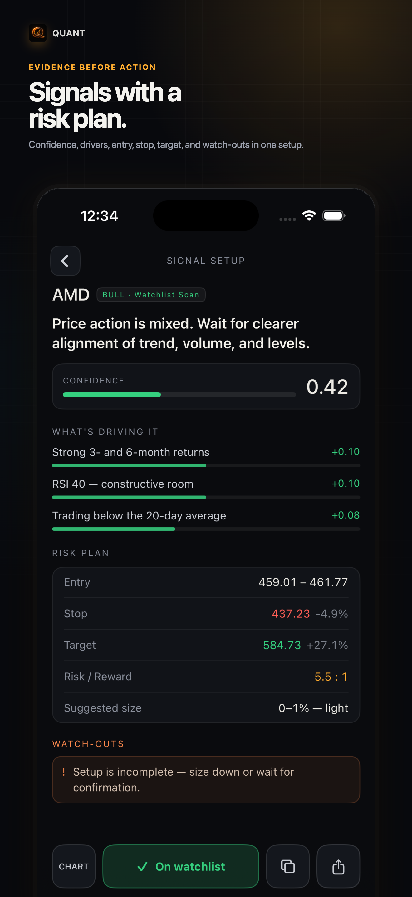
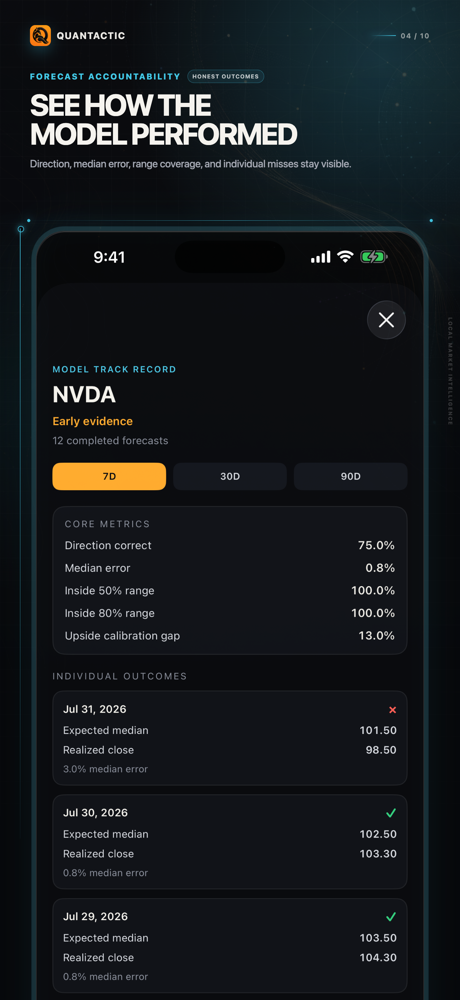

⌁
집중 데스크
중요한 종목을 따라가며 가격, 레짐, 모멘텀, 뉴스를 한곳에서 확인하세요.
Quantfox는 워치리스트, 차트, 매크로 맥락, 리스크 인식 시그널, 온디바이스 시장 지원을 하나의 데스크에 모읍니다.
iPhone · iOS 26 이상 · 증권 계좌 연결 없음

가짜 확신이나 브로커 유도 없이 빠르게 점검하도록 설계했습니다.
중요한 종목을 따라가며 가격, 레짐, 모멘텀, 뉴스를 한곳에서 확인하세요.
캔들, 거래량, 이동평균, 지지·저항, 유연한 기간, 터치로 정확한 값.
변동성, 금리, 원유, 달러, 경제 지표, 시장 레짐을 가까이.
트레이드 맥락과 샘플 forecast 범위로 불확실성을 드러냅니다.



Quantfox Pro는 실험적 샘플 Forecast(더 긴 기간 포함)를 잠금 해제하고, 전면 광고를 제거하며, 프라이빗 AI·리서치 한도를 확장하고, 향후 Pro 도구를 하나의 구독으로 포함합니다. 무료는 제한된 7일 Forecast 미리보기를 제공합니다.